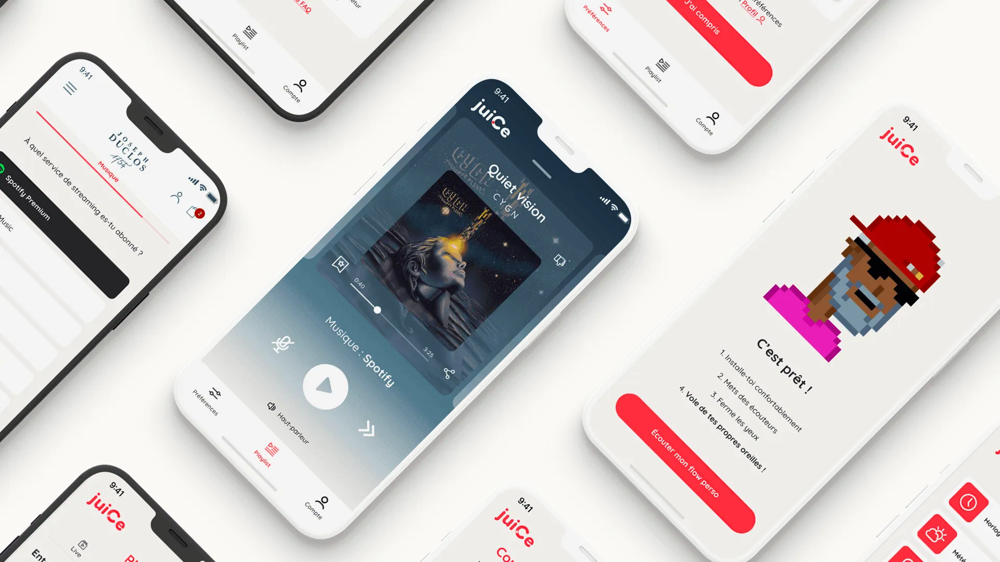
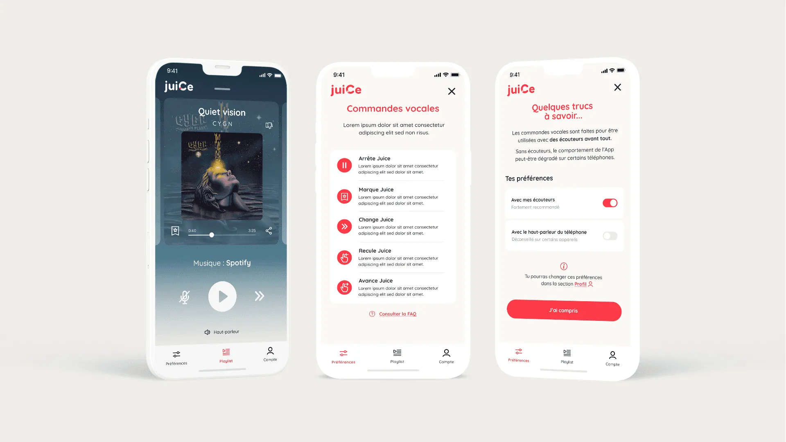
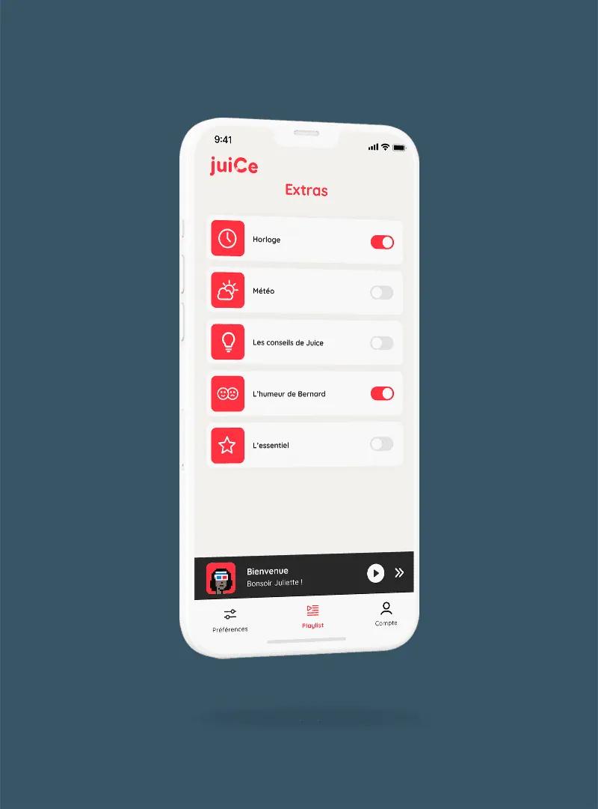
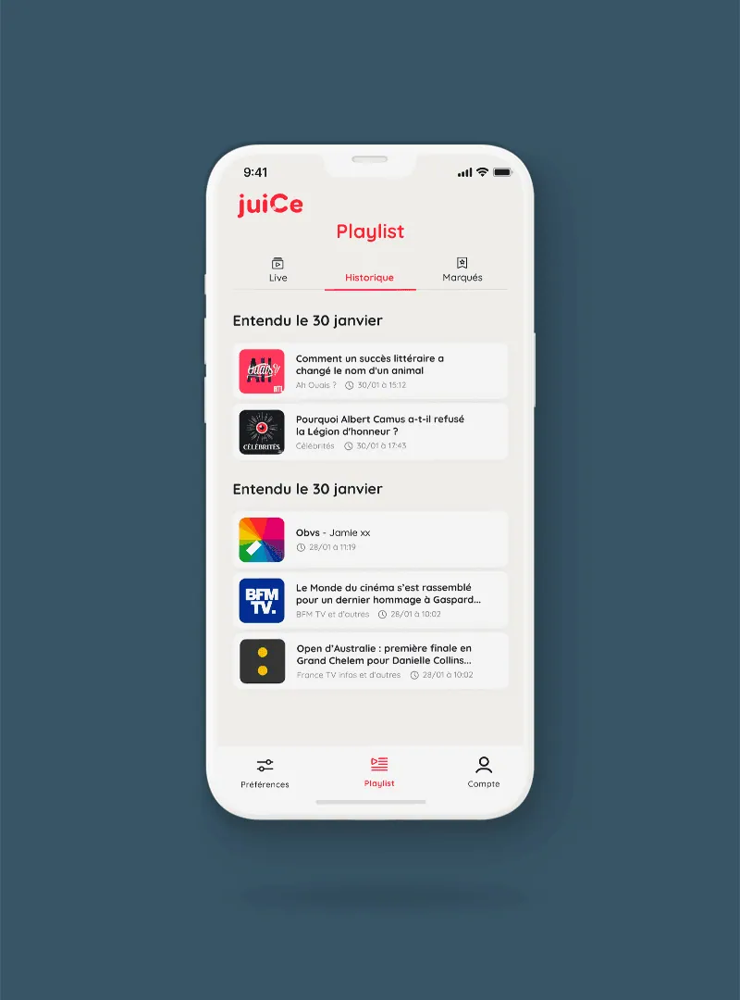
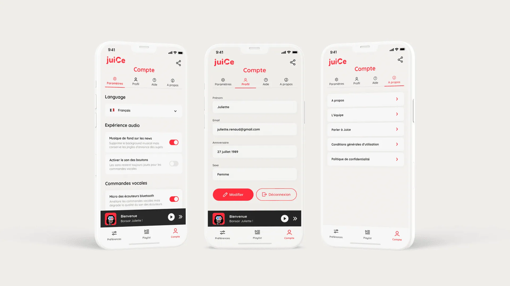
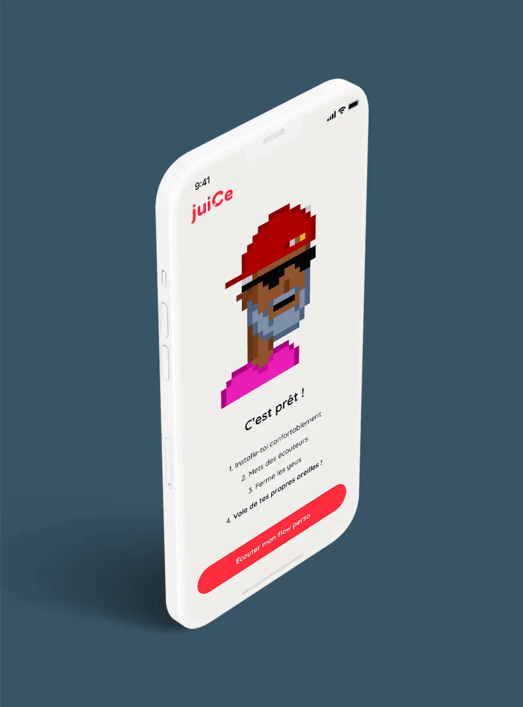
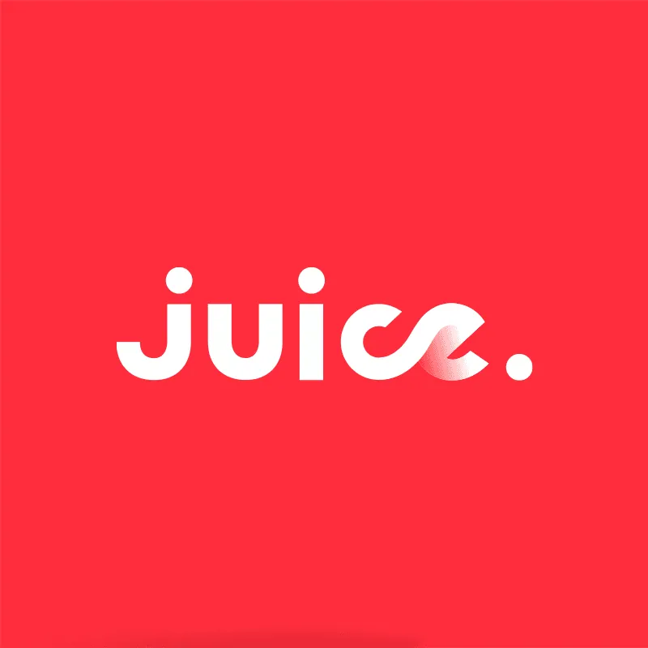
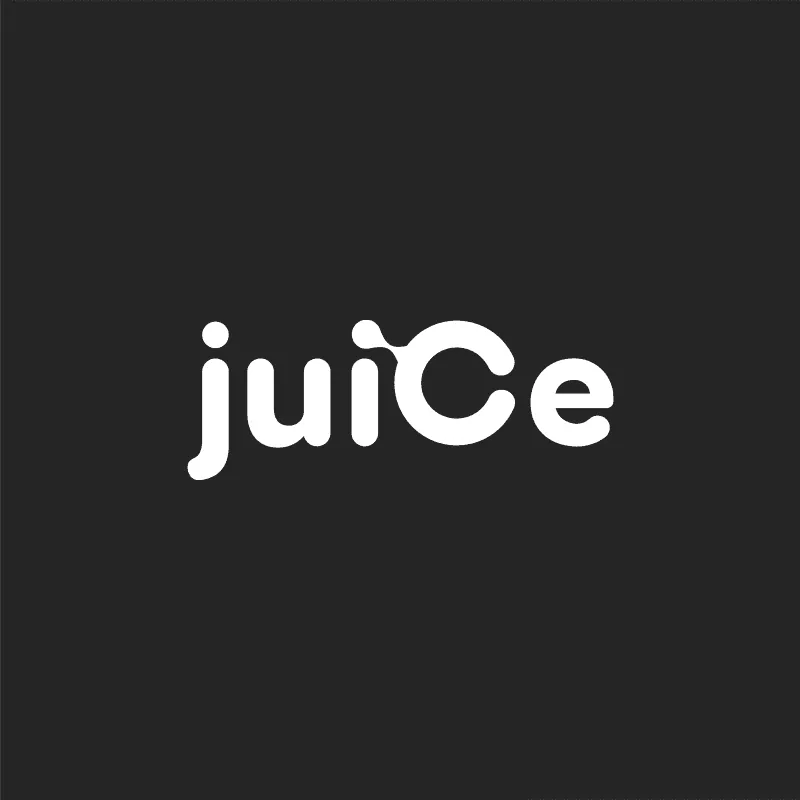
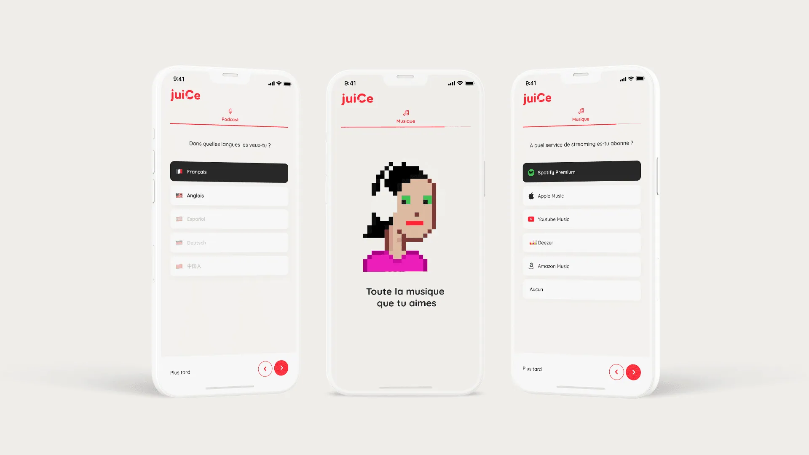

Case study
Juice
Designing dynamic audio

01The project
UX/UI design and branding for Juice, an app offering a new way to experience audio.




02The solution
No more static podcasts and playlists: Juice offers a personalised listening experience that adapts in real time to the news, to habits and to each listener’s mood.



